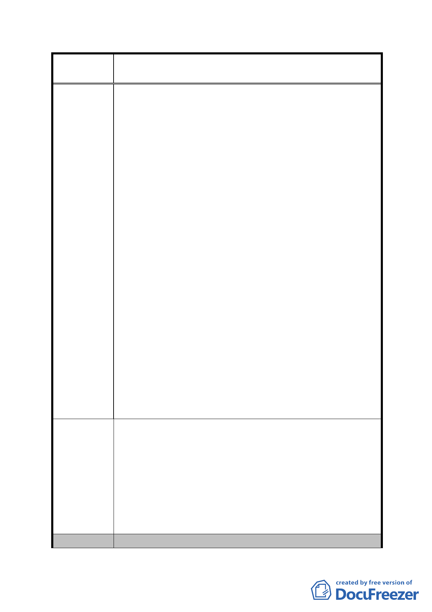

案
名
修訂臺北市「基隆河（中山橋至成美橋段）附近地區土地使
用分區與都市設計管制要點」（北段地區）計畫案
主要軸帶商業活動內涵並兼顧都市發展，其他樓層實無商
業限制之必要，應回歸市場機制且比照第三種商業區規定
之精神。
二、除住宅區外之其它建築基地，應回歸「台北市分區使用
管制規則」中綜合設計放寬獎勵規定。
建議理由：
都會城市多鼓勵提供公共呼吸活動空間，請取消加諸本
區開放空間設置之不合理規定，並回歸「臺北市土地使
用分區管制規則」所訂原則。
三、「非作住宅使用之建築物內部公眾使用設施〈如梯廳、
廁所、茶水間等) 應集中留設」之規定取消。
建議理由:
據查多處政府機關政要、公司行號主管者多於私領域空
間設有衛浴廁所設備，然本地區卻強制要求須集中留
設，不僅不符設計潮流，且絲毫無視民眾對其財產之使
用管理權，無視夜間加班婦女之安全性且易增加社會治
安風險。
四、「活潑天際線開放建物高度」
建議理由 :
台北市為首善之都，建議市府應可更開放檢討建築物高
度，齊頭式高度非但使市容呆板更顯當局僵化思維。反
觀國際大都會，值得世人朝拜的建物絕非制式齊頭建
築。
一、除住宅區外之其他建築基地使用管制用途應回歸「台北
市分區使用管制規則」比照第三種商業區規定，得做商
業與住宅使用。
建 議 辦 法 二、除住宅區外之其它建築基地，應回歸「台北市分區使用
管制規則」中綜合設計放寬獎勵規定。
三、「非作住宅使用之建築物內部公眾使用設施（如梯廳、
廁所、茶水間等) 應集中留設」之規定取消。
四、「活潑天際線開放建物高度」。
委 員 會 決 議 同編號 1。
- 99 -